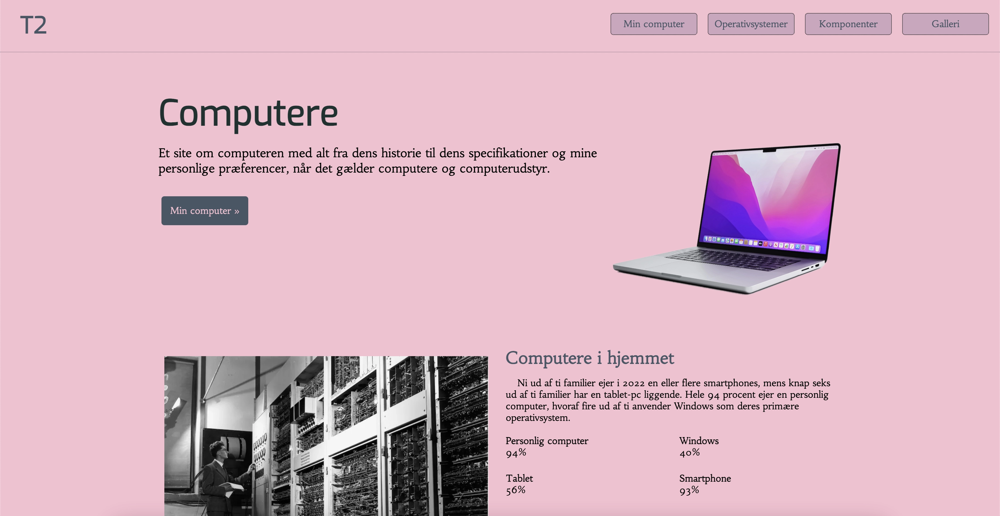
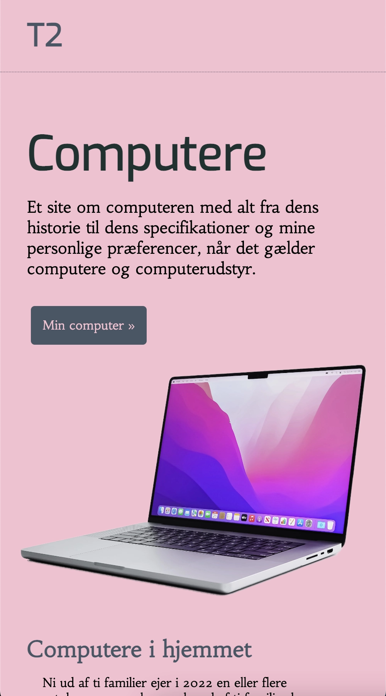

Grundlæggende web
Studiestartsprøven
I dette tema stiftede jeg bekendtskab med kodningssprogene HTML og CSS – herunder også brugen af css flex, grid og media-queries. Jeg lærte at anvende Visual Studio Code og validering, og FileZilla til overførsel af filer til mit website, og jeg lærte i forbindelse også om korrekt mappestruktur, samt filformater til web.
Alt dette brugte jeg til i studiestartsprøven at implementere i forvejen produceret indhold af tekst og billeder om computere på et responsivt website med tilgangen ”mobile-first” ud fra udleverede wireframes og layoutdiagrammer til både mobile og desktop.
#studiestartsprøven.desktop
.mobile
Emnesite
Herefter skulle vi lave et emnesite med valgfrit emne, hvor vi blev introduceret til gestaltlove, designkonventioner, farver og kontraster, samt kendskab til programmerne xd og photoshop.
Vi skulle designe vores emnesite ud fra én af tre følgende stilarter: modernisme, retro design eller futurisme. Jeg valgte kager som emne, og retro design som stilart. På den måde kunne jeg også bruge mine egne billeder af kager jeg selv har bagt ift ophavsret.
Processen jeg derefter gennemgik foregik således: Jeg startede med mit moodboard, hvor jeg arbejdede med grynede teksturer, ensfarvede billeder, dæmpede farve, kontraster og skrivemaskine typografier i kraft af mit valg af stilart. Dernæst min wireframe, hvor jeg arbejdede med whitespace, loven om nærhed og et symmetrisk layout for at matche det rolige udtryk fra mit moodboard. Det samlede jeg til sidst til et styletile og et mockup.
Opgaven lærte mig vigtigheden af denne process, da den gjorde det nemmere og mere tidsbesparende at gå til kodningen af det endelig website. Jeg var under denne opgave ikke så opmærksom på filformaterne, så dem var jeg ekstra opmærksomme på i bl.a. vores opgave Redesign under ’Indhold’.
#emnesite